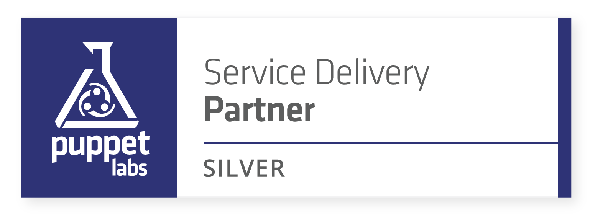

<section id="whyexample42">
    <div class="content-section-b">

        <div class="container">

            <div class="row">
                <div class="col-lg-5 col-lg-offset-1 col-sm-push-6  col-sm-6">
                    <div class="clearfix"></div>
                    <h2 class="section-heading">Why example42</h2>
                    <div class="lead">
                      The answer in brief: Experience and Expertise.
                    </div>

                    <div class="lead">
                      IT departments are complex environments, and before you can provide a solution for workflows, you should be aware of the real requirements. Of course, we offer expert knowledge about Puppet, but we also have many years of experience in IT, system administration and network and cluster configuration. We know exactly what IT departments have to face in everyday life, but as consultants, we also know the typical weak spots. We have seen too often how not to do it.
                    </div>

                    <div class="lead">
                      We love Puppet because it’s a great software tool to make IT operations smarter, safer and faster. We aim to give our customers the best service and consultancy on how to improve their IT environment and we love to share our knowledge at training and events with users and customers.
                    </div>

                    <div class="lead">
                      We are official partners and work closely with Puppet by Perforce.</br>
                      

                    </div>

                </div>
                <div class="col-lg-5 col-sm-pull-6  col-sm-6">
                  
                </div>
            </div>

        </div>

</section>
